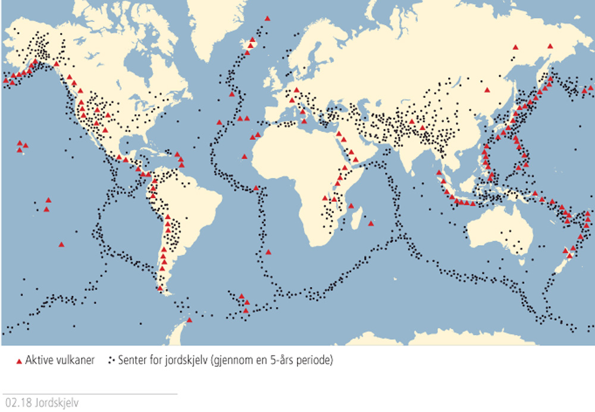

Jordskorpa
- Hvorfor skjer det så vidt Jordskjelv i norge,
men det skjer mye jordskjelf i f,eks Hawaii.
rett igjennom Landet men, ikke noe grenser er nærme Norge.

- Hvordan har Jordskorpa forandret Jorda.
- Hvordan kommer Jorda til å se ut i fremtiden?
til å bli større eller mindre,
og endre plass.

- Hvordan så den ut i fortiden?
en gang i fortiden var det et superkontinent som het
Pangea.
- Hvordan ser Jordskorpa ut under havet?
kan du ta på nord america plata og europa plata samtidig.